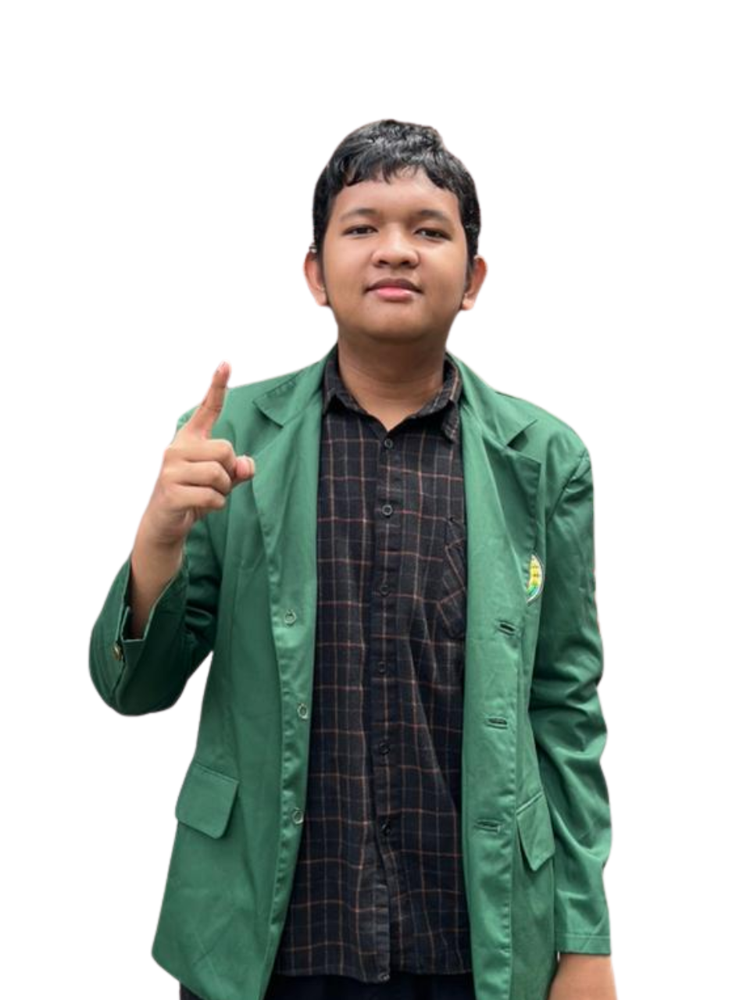
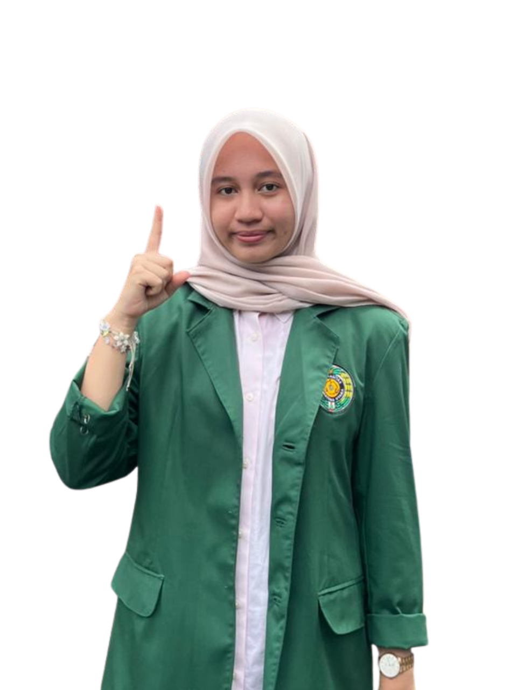
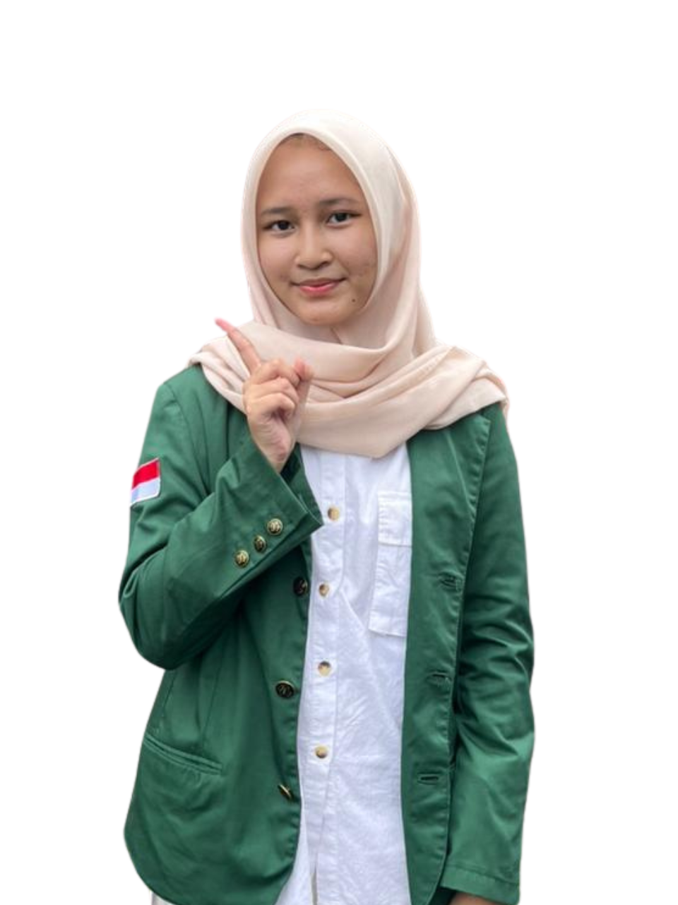
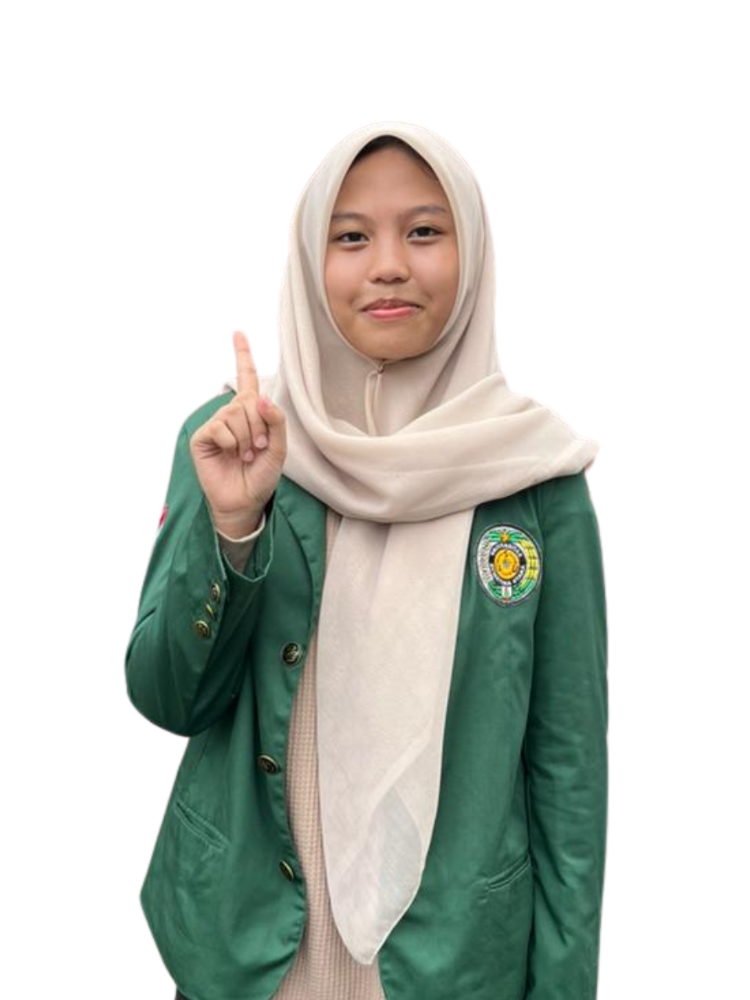
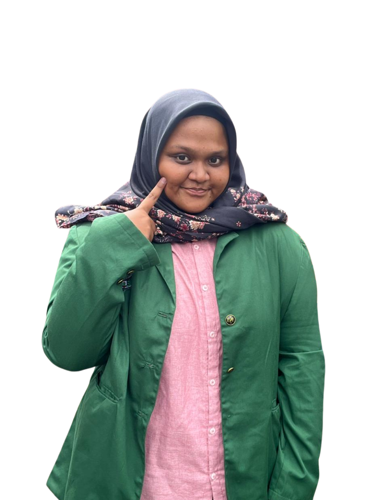
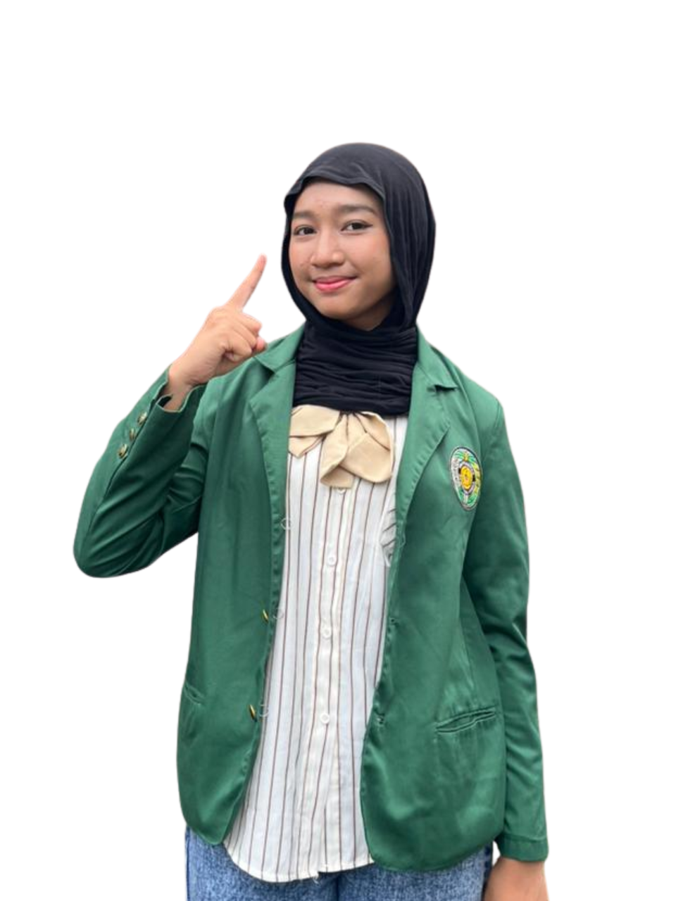

About Us
Anggota Kelompok 1 PTI

David Morgan Neuron
(251402048)
Hannan Rava Mahardika
(251402006)

Muhammad Faiza Elfaz
(251402097)

Naydila Chairunisa Rambe
(251402045)

Zerlina Adelide Aqila
(251402106)

Qeizha Aleesha Zyva
(251402054)

Ratu Sabrina Turnip
(251402018)

Nayla Talisa Salsabila
(251402144)